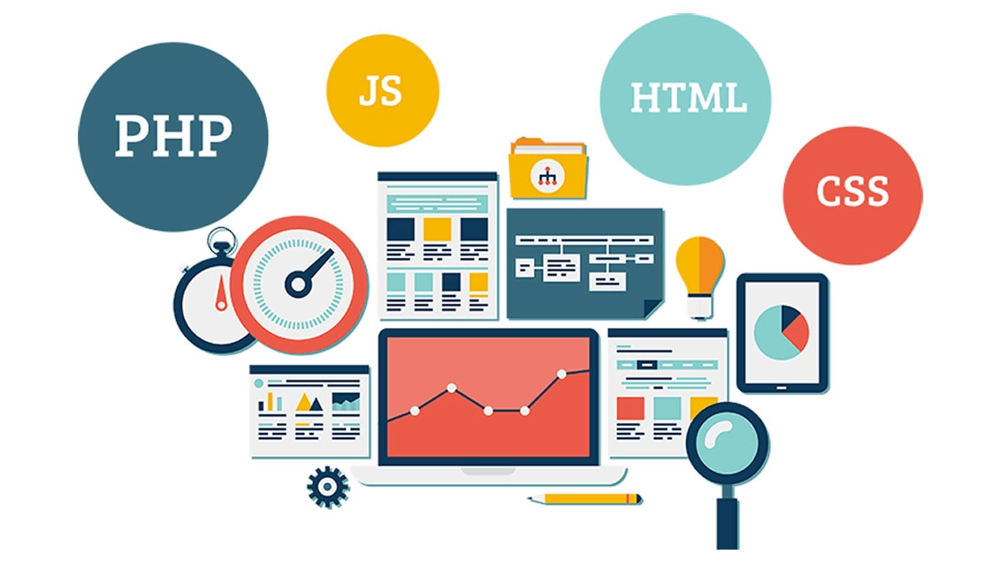

Güncel trendlere uygun web tasarımlar yapan,
iş süreçlerinizi hızlandıracak ve kolay yönetebileceğiniz yazılım çözümleri sunan,
kesintisiz, hızlı, güvenilir hosting hizmeti sunan ve sürekli kendini geliştiren bir firmayız.
21 yıldır web tasarımı,web yazılımı,Seo,E-Ticaret Yazılımı konusunda uzman kadrosuyla hizmet veren ve web tasarım firmaları arasında en popüler firma niteliğinde olan KT Milenyum Soft hizmette sınır tanımıyor.
KT Milenyum Soft, 21 yıldır yazılım ekibi ve tasarım ekibinin ortak çalışması sonucu oluşturduğu e-ticaret uygulamalarıyla da sayısız projeye imza atıp kendini kanıtlamıştır.
Şirketimiz, zamanın vazgeçilmezi olan google arama motorlarında çıkabilmek adına yapılan SEO(arama motoru optimizasyonu) çalışmalarıyla, yaptığı her çalışmada başarı kaydetmiştir.
E-mail kullanımının artış göstermesi sonucu artan virüs ve spam saldırılarından kurtulmak için kullanılmakta olan anti spam programları, anti spam yazılımı konusunda da en kuvvetli programların satışını ve hizmetini vermektedir.
KT Milenyum Soft, web tasarım ve web yazılımın yanı sıra yine her firmanın vazgeçilmezi olan kurumsal kimlik çalışmaları, kart vizit çalışmaları, katalog tasarımı, katalog basımı, broşür tasarımı, broşür basımı, online katalog yazılımı, online katalog entegrasyonları, cd çalışmalarını da yürütmektedir.
KT Milenyum Soft, bünyesinde yukarıda saydığımız hizmetlerin yanı sıra kendisine ait serverları üzerinden Web Hosting, web sitesi yayını,e-mail hosting gibi konularda da uzman ekibiyle bizzat hem telefon desteği hem de uygulama desteği vermektedir.
KT Milenyum Soft tüm müşterileri için her zaman en iyiyi ve en yeniyi hedeflemiştir. KT Milenyum Soft yıllardır tüm müşterilerine, genç ve eğitimli ekibiyle kesintisiz hizmet vermeyi amaçlamıştır.
En önem verdiği ilke, süreklilik ilkesiyle müşterilerine tek noktadan tüm desteği sunmaktır. Binlerce firma internet üzerinden yeni firmalarla KT Milenyum Soft'un sayesinde tanışmıştır. Globalmedya Türkiye'nin en fazla web tasarım projesine imza atan firması olup şuana dek 295 bini aşkın teslim ettiği tasarımla her geçen gün yeni tasarımlarla da kendini geliştirmeyi bilmiştir. KT Milenyum Soft firmalara web tasarım, web yazılım, Seo yazılımı(arama motoru optimizasyonu), E-ticaret, Web Hosting, mail hosting, mobil tasarım, mobil yazılım geliştirme, anti spam, SOSYAL MEDYA ve kurumsal kimlik çalışması alanında hizmet sunmaktadır.
Tasarım geliştirme ve bilgi ağını daha da genişletme amacıyla yeni bir yapılanma içerisinde bulunan ekip, sisteme her gün yenilikler ekleyerek, ziyaretçilere farklı bir dünya yaratmaktadır.
Internet kullanımının henüz kısa bir geçmişi olmasına rağmen kullanımının artması, iletişim altyapısının güçlenmesi ve güvenlik konusundaki endişelerin büyük oranda ortadan kalkmasını sağlayan güvenlik teknolojilerinin gelişmesi, elektronik ticaretin tüm dünyada hızla yaygınlaşmasını sağlamaktadır. Hızla gelişen sektörümüzde bizimle aynı görüş ve dinamizmi paylaşan bir çok teknik personel, şirketimiz bünyesinde bilgi ve emeklerini paylaşmaktadır.
MİSYONUMUZ
Misyonumuz son tasarım ve bilişim teknolojilerini kullanarak ilerici İnternet çözümleri yaratmak ve bunları müştelerimizin hizmetine sunmaktır. Bu şekilde müşterilerimizin hedeflerine ulaşmada İnternet kullanımından olabildiğince yararlanmalarını ve iş modellerinde internetin verimli şekilde kullanılmasını sağlamaktayız.
VİZYONUMUZ
Vizyonumuz, müşterilere İnternet stratejileri geliştirerek danışmanlık yapan ve çözümlerin uygulanmasını sağlayan ve kesintiz kaliteli hizmetler sunan küresel İnternet çözümleri sağlayacısı olmaktır.

Tasarım
Yaratıcılığa markalaşma stratejilerine,etkileşimli Web çözümlerine görsel estetiğe olan saplantımızı ve yenilikçi bakış açımızı yansıtıyoruz.Çünkü dijital ortamdaki varlığınız , şirketinizin ve sunduğunuz değerlerin doğrudan yansımasıdır.
Yazılım
Sizi gereksiz ve çok detaylı süreçlerde boğmadan tamamen size ve şirketinize özgün özel yazılım çözümleri geliştiriyoruz.Kurumsal yapılarınızın güçlendirilmesi , operasyonel işlerin dijital dünyaya taşınması ve bunların sonucundan kaynak ve maliyet tasarrufu yapmanızı sağlıyoruz.
Teknoloji
Güncel gelişmelerini takip ederek edindiğimiz bilgi ve tecrübelerimizi müşterilerimize aktarıyor ve en iyi çözümlerin peşinde koşarak teknolojiyi müşterilerimiz için ulaşılabilir ve kullanışlı bir biçimde sunmaya çalışıyoruz.
Mühendislik
KT Milenyum Soft olarak deneyimli kadromuz ile ürünlerinizi, işleyişini ve üretiminizi optimize etmek için çözümler sunuyoruz.Kurumların raporlama ve analiz süreçlerini hızlandıran çözümlerle gerçek veriye dayanan doğru kararların alınmasına yardımcı olmaktayız.